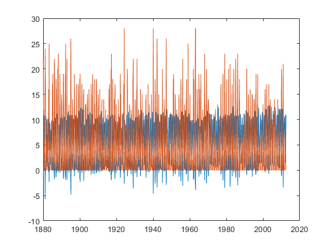
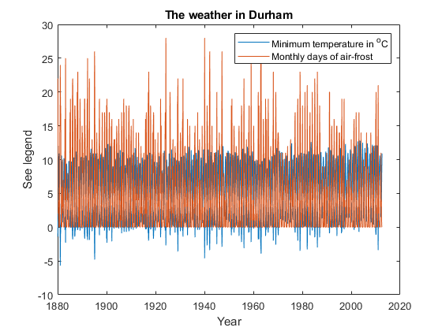
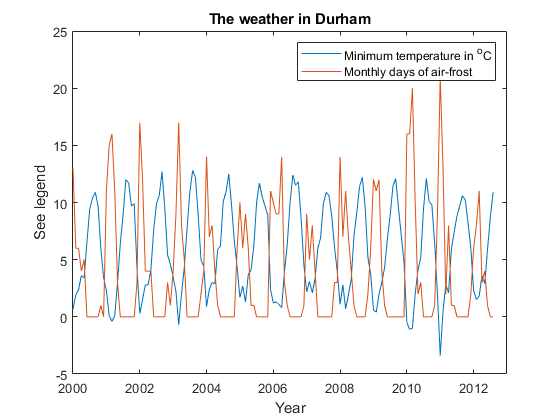

MATLAB Notes: Session 1 - Arrays and plotting
Simon Mathias
Department of Engineering
Durham University
Contents
Learning outcomes
At the end of the session you should be able to:
- Input data into a 1D array.
- Access data from a 1D array.
- Distinguish between row and column vectors.
- Determine the size of an array.
- Input data into 2D arrays.
- Access data from 2D arrays.
- Write a script file.
- Import data from an excel file.
- Plot data in x-y scatter plots.
Input data into a 1D array
Open MATLAB, type the following into the "Command Window" and then press "Enter". Note that it is possible to copy and paste the text. But I would like you to type it as this will help emphasise the various syntax we are employing. Indeed, please type all the text in the grey boxes hereafter unless I state otherwise.
A=[4 6 8 5 1 3 2]
A =
4 6 8 5 1 3 2
We have stored a series of numbers in an array called A. The array above is an example of a one-dimensional (1D) array. 1D arrays are sometimes referred to as vectors.
Note that it is possible to copy and paste this text into MATLAB. But you will benefit a great deal more from typing the code as this will lead to interesting errors, which will lead to an improved understanding of the various syntax we are employing.
We can see the numbers again by typing A in the command prompt and pressing Enter again.
A
A =
4 6 8 5 1 3 2
We can perform arithmetic operations on A. For example, type the following in the Command Window:
B=A*2 C=A+2
B =
8 12 16 10 2 6 4
C =
6 8 10 7 3 5 4
Access data from a 1D array
We can also access specific data from A. For example, typing A(3) will extract the third value of A.
B=A(3) C=A(5)
B =
8
C =
1
Multiple values can also be extracted simultaneously. For example, to extract both the third and fifth value, type:
B=A([3 5])
B =
8 1
Note that we are currently using two types of brackets: [] and (). The square brackets, [], are used for stacking values in arrays. The curved brackets, (), are used for specifying which specific data we want from the array. Curved brackets are also used for functional arguments e.g.
sin(5)
ans = -0.9589
and for arithmetic operations e.g.
6*(4+3)
ans =
42
Interestingly, typing 2:7 produces a sequence of numbers from 2 to 7 in increments of 1.
2:7
ans =
2 3 4 5 6 7
The above functionality can be used to more easily obtain multiple values from a vector. For example:
B=A(2:5)
B =
6 8 5 1
Above we were able to extract the 2nd, 3rd, 4th and 5th data points from A. These are now stored in a vector called B.
Note that 2:7 produced a sequence of numbers from 2 to 7 in increments of 1. Typing 2:2:7 produces a similar sequence but in increments of 2.
2:2:7
ans =
2 4 6
Observe that the sequence does not include 7 as this does not fit within the specified sequence.
The above can be useful if one wants to extract every other number from a vector. For example:
B=A(1:2:7) C=A(2:2:7)
B =
4 8 1 2
C =
6 5 3
Incidentally, if one uses : on its own, MATLAB returns all the values as a column vector (a term discussed further in the following section)
D=A(:)
D =
4
6
8
5
1
3
2
Above it can be seen that B now contains the 1st, 3rd, 5th and 7th numbers from A while C contains the 2nd, 4th and 6th numbers from A.
Note that 2:3:7 would produce a sequence in increments of 3 etc.
Row vectors and column vectors
All the arrays we have studied so far are 1D arrays. We can also say that they are "row vectors".
A=[4 6 8 5 1]
A =
4 6 8 5 1
Observe that A is a row of numbers.
Another type of 1D array is a column vector. Consider the following:
B=[4; 6; 8; 5; 1]
B =
4
6
8
5
1
Note that the semicolons have made the vector into a column.
A row vector can be "transposed" into a column vector using '
C=A'
C =
4
6
8
5
1
A column vector can also be "transposed" into a row vector using '
D=B'
D =
4 6 8 5 1
Arrays of the same size can be added (or subtracted) together
F=A+D G=A-D
F =
8 12 16 10 2
G =
0 0 0 0 0
These arrays can also be multiplied and divided by each other or even taken to the power of each other. But take care to use the "dot operator" (e.g. .*, .\, .^)! NOT using the . operator will lead to MATLAB performing matrix operations (which are different) and you may not understand matrices sufficiently at this stage. Try:
F=A.*D G=A./D H=A.^D
F =
16 36 64 25 1
G =
1 1 1 1 1
H =
256 46656 16777216 3125 1
However, the above operations are only possible when the arrays have the same size. The dimensions of an array can be checked using the size command.
size(A)
ans =
1 5
The first dimension denotes the number of rows. The second dimension denotes the number of columns. Applying size(A) tells us that A has one row and five columns.
Applying size(B) tells us that B has five rows and one column.
size(B)
ans =
5 1
Although A and B have the same number of elements, A and B cannot be added, subtracted, multiplied, divided or powered by each other because they do not have the same size. Try it and see what happens!
Inputting and accessing 2D arrays
If an array has more than one row and more than one column, it is a two dimensional (2D) array. Another word for a 2D array is a matrix. Type the following into the "Command Window"
A=[2 5 8 6; 9 4 3 1; 7 12 10 11]
A =
2 5 8 6
9 4 3 1
7 12 10 11
Note now that the semicolons mark the end of each row.
size(A)
ans =
3 4
Incidentally, if we want to know how many values are in an array (1D or 2D) we can use the command numel. Type the following in the Command Window
numel(A)
ans =
12
Our matrix has three rows and four columns.
We can access individual elements as follows:
A(3,2)
ans =
12
We have extracted the 3rd row of the 2nd column.
To get the whole second row we can take advantage of the : symbol:
A(2,:)
ans =
9 4 3 1
To get whole third column:
A(:,3)
ans =
8
3
10
Clearing the screen and clearing the workspace
You may have got tired from seeing so many things in the Command Window.
To clear the command window, just type clc.
clc
Even though you have cleared the command window, all your variables still exist in the work space.
To find out what variables are in the workspace, just type whos.
whos
Name Size Bytes Class Attributes A 3x4 96 double B 5x1 40 double C 5x1 40 double D 1x5 40 double F 1x5 40 double G 1x5 40 double H 1x5 40 double ans 3x1 24 double
As you can see, all the variables are still present.
To clear all the variables from the workspace, you need to type clear all.
clear all
Now type whos.
whos
Now you can see that all the variables have been cleared.
Using script files
So far we have performed all of our analysis in the Command Window. This a useful first step and it is often helpful to try new things out in the Command Window. But the Command Window can quickly become tedious when undertaking more practical examples of analysis. Instead, normally we write our code in script files.
Click on "File", "New", "Script". The "Editor" window should now appear.
At the top of the window type the following:
%This is a script file containing my first MATLAB code %Just to get started, make a row vector of numbers A=[4 6 8 5 1 3 2] %Multiply A by 2 and store as B B=2*A
A =
4 6 8 5 1 3 2
B =
8 12 16 10 2 6 4
Create a directory (folder) called "MATLABnotes" in an appropriate place. Click on "File", "Save As...", browse to "MATLABnotes" and save the file as "MATLABsession1_Assignment.m".
Now click on the green arrow at the top of the editor window. A dialogue box will popup. Choose the "Change Folder" option. The instructions in your script file have now been executed. You should see the associated values of A and B in the command prompt.
Note that all those lines with % at the beginning do nothing. They are "comments". It is very important to write comments in your code to explain to future users what the code is meant to do. The only two lines that do anything specific are those associated with A and B. The comments are conveniently shown in green. We can write as much code as we like and then press the green arrow and MATLAB will automatically execute everything in the script file listed.
Importing data from Excel
Save DurhamWeather.xlsx to the directory, "MATLABnotes". To read the spreadsheet data into a 2D array called data add the following text to your mfile, "MATLABsession1_Ex1.m".
%Import Durham weather data from Excel data=readmatrix('DurhamWeather.xlsx','Sheet','Sheet1');
readmatrix is a MATLAB function that creates arrays from a range of data files including Excel files. Note that we are going to store the data in the array, data. The three function "arguments" for readmatrix in this case are DurhamWeather.xlsx, which is the name of the Excel file we want to open, Sheet, which tells readmatrix that the next argument is the name of the worksheet we want from our Excel file, and Sheet1, which is the name of the worksheet we want (note that many spreadsheet files contain more than one worksheet).
Note that we need to type these arguments in between single quotes, i.e., the ' '. When you enter code in between ' ', MATLAB reads this as a "string" (more about this later). We have also written a semicolon at the end of the line. This tells MATLAB not to print data in the Command Window. It is more normal to place a semicolon at the end of each line of MATLAB code so as to avoid printing to the Command Window. Printing in the Command Window costs a lot of computation time.
Have a look at the spreadsheet file in Excel. Note that the spreadsheet has a lot of "header" information explaining what the data is. The readmatrix function ignores the header information and stores all the numerical data in a 2D array. Where there is no value present, the array will contain a value of NaN, which stands for "not a number".
To investigate the size of the array add the following to your mfile:
%Determine the size of the data
size(data)
ans =
1591 7
Note that here we do not have a semicolon at the end as we would like to print the size of this array. Press the green arrow and run your Mfile. MATLAB has imported the spreadsheet and told you the number of rows and columns.
To extract the data into more meaningful variable names, add the following code to your mfile:
%Extract years and store in yyyy yyyy=data(:,1); %Extract months and store in mm mm=data(:,2); %Extract monthly mean daily minimum temperature and store in tmin tmin=data(:,4); %Extract monthly number of days with air-frost and store in af af=data(:,5);
Take time to compare the column numbers extracted from data with the spreadsheet file as viewed in Excel. The choice of variable names is arbitrary but should be useful so as to aid the reader as to what they might mean.
If we want to plot the data against time we need to combine yyyy and mm by adding the code:
%Combine yyyy and mm to form a decimalised year
tYr=yyyy+mm/12;
The 1D array tYr now contains a vector of decimalised years. Note there are 12 months in a year!
Plotting data in x-y scatter plots
Add the following code to plot tmin and af against time:
%Make a figure figure(1) %Clear figure(1) if it alreay exists clf %Plot time against minimum temperature and days with air-frost plot(tYr,tmin,tYr,af)
Run the file by clicking on the green arrow again. A figure is produced with the plotted data.
Add the following to provide relevant labels:
%Provide a legend, axes labels and a title legend('Minimum temperature in ^oC','Monthly days of air-frost') xlabel('Year') ylabel('See legend') title('The weather in Durham')
Press the green arrow to run again.
We can limit the x and y axes by adding to the years of 2000 to 2013 and for those values between -5 and 25 by adding the code
%Limit the axes to a range of interest
axis([2000 2013 -5 25])
 Press the green arrow to run again.
Classroom assignment
1) Add code to your mfile to extract the maximum temperature and rainfall data. Then provide code for an additional graph showing a plot of rainfall, minimum temperature and maximum temperature against time for the period of 1970 to 1980. Take care to label your graph appropriately.
2) Download the porosity and permeability data file, NorthSeaRocks.xlsx. Write a new mfile to import the data and generate a plot showing permeability against porosity for each of the different formations. Label your plot appropriately (xlabel, ylable, legend, etc.). You may want to use a log scale. Study plotting using help to find out more. Study readmatrix in help as well to find out how to import more than one worksheet.
An example MATLAB code, containing all of the instructions requested above, is given in MATLABsession1_Assignment.m.